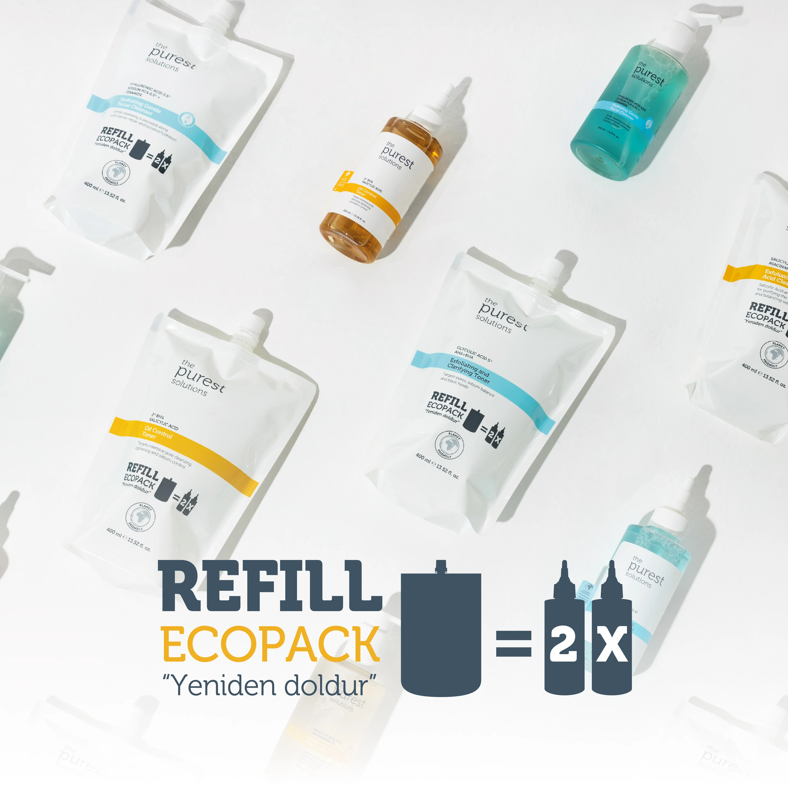

Neden The Purest Solutions ?CLEAN BRAND : Temiz Marka; Ürünlerimizi geliştirirken doğaya saygılı, hayvanlar üzerinde test edilmeyen, hayvansal içerik bulunmayan ;Hayır! Dediğimiz, Paraben, Alkol, Esans, Boya içermeyen bir marka hayal ettik ve ürettik <3 LESS IS MORE : Az Ama Öz içerik; Cilt bakım rutininizde karmaşaya mahal vermeyecek sadelikte, anlaşılır ve sonuç odaklı aktifler ile formülasyonlarımızı kombinledik. EFFECTIVE FORMULATING : Efektif Formülasyon; Sizlere vaadde bulunmuyoruz sonuç odaklı formülasyonlar üretiyoruz. Efektif formülasyonun içerikten daha kıymetli olduğunu çok iyi biliyoruz! Doğru aktif maddeleri uygun pH ile, stabil halde kurgulayıp sizlere sunuyoruz. GIVING BACK !: Paylaşıyoruz! Paylaşmayı seviyoruz, her aldığınız ürünle sizi paylaşımlarımıza ortak ediyoruz! SKIN CARE EXPERT: Cilt Bakım Uzmanı – Websitemizde, instagram sayfamızda yer alan bilgiler ve uzmanlarımız ile yapacağınız görüşmeler sonrasında kendi cildinizin uzmanı olmanızı istiyoruz ve bunun için çalışıyoruz. |
|
Yılın Sürdürülebilir Yaşam Ödülü2023 Watsons güzellik ve kişisel bakım ödüllerinde tüm ürünler arasında en çok puanı alarak yılın en sürdürülebilir yaşam ürünü "Exfoliating and Clarifying Toner" seçildi. |
|
Yeni Çevre Dostu Çözümlerimizle Tanışın!Doğa dostu yeniden kullanılabilir ve geri dönüştürülebilir ambalajıyla Refill Ekolojik Yedek Ambalaj ile biten ürünlerini yeniden doldurabilirsin. |
 |
Heyecan Dolu Bir Aya Hazır Mısın?The Purest Solutions'ın 3.yılına özel Solutions Days günlerinde birbirinden güzel sürprizler seni bekliyor! |
|
2022KUAD Upcycle Proje Ödülü |
|
2022KUAD Innovation Zone Proje Ödülü |
|
2022İstanbul Marketing Awards - Ambalaj Tasarımı: Yeni Ürün |
|
2022Yılın En İyi ÜrünüWatsons güzellik ve kişisel bakım ödüllerinde tüm ürünler arasında en yüksek puanı alarak yılın en iyi ürünü "Exfoliating Facial Peeling" seçildi. |
|
2022Yılın En iyi SerumuExfoliating Facial Peeling, Watsons güzellik ve kişisel bakım ödüllerinde serum kategorisinde en çok oyu alarak "en iyi serum" ödülünü aldı. |
|
2022Nerelerdeyiz?Turkey, Cyprus, Kosovo, Pakistan, Mauritania, Qatar, Gabon, Mongolia, Vietnam, Jordan, Kuwait. S.Arabia, Romania, Morocco, Oman, Algeria, Iran, Azerbaijan, Moldova, Lebanon, Nepal, Palastine, Lithuania, Abkhazia, Iraq, Libya, UAE, Sudan |